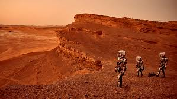

Marte é o quarto planeta mais próximo do Sol e o segundo menor planeta do sistema solar, depois de Mercúrio, sendo consideravelmente menor que o planeta Terra. Apresenta uma coloração avermelhada, pela presença de óxido de ferro na sua superfície. Por isso, recebeu o nome de Marte, em homenagem ao deus romano da guerra. Possui duas pequenas luas de formato irregular: Fobos (medo) e Deimos (pânico). Seus nomes derivam da mitologia grega e representam os filhos de Ares (Marte) e Afrodite (Vênus). Marte é um dos planetas mais estudados do sistema solar. Podendo ser visto da Terra a olho nu, ou seja, sem auxílio de um telescópio. A duração do dia em Marte aproxima-se do planeta Terra, com 24 horas e 37 minutos, embora o ano marciano tenha duração de 687 dias terrestres.
Marte é um planeta muito frio, árido e rochoso. A sua temperatura máxima é de aproximadamente 25°C, com uma média de -60°C, a qual pode chegar até cerca de -140°C durante à noite. Sendo um planeta terrestre (rochoso), suas camadas são compostas por atmosfera, crosta, manto e núcleo. A maioria das rochas na superfície é formada por basalto. Sua atmosfera é muito fina e é composta essencialmente de gás carbônico, embora exista em menor quantidade o nitrogênio, oxigênio, argônio, dentre outros gases.
Conhecido desde a antiguidade, a partir do século XIX Marte tem despertado maior atenção entre astrônomos e cientistas. Uma vez que o planeta vermelho se assemelha à Terra em diversos aspectos, tal como as estações do ano, relevo (vales, dunas, planícies, planaltos, cânions, etc.) e aproximação do dia terrestre (quase 24 h), há pesquisas que apostam na existência de vida no planeta. No entanto, o fato de ser envolvido numa atmosfera fina e bastante rarefeita reforça a impossibilidade de condições de vida no planeta. O que despertou ainda mais o interesse dos cientistas na atualidade foi um estudo realizado no ano 2000 pela NASA (Administração Nacional da Aeronáutica e do Espaço). Nesse estudo, foi confirmada a existência de processos erosivos no planeta, o que evoca a possibilidade da existência de água e, consequentemente, de vida em Marte.
